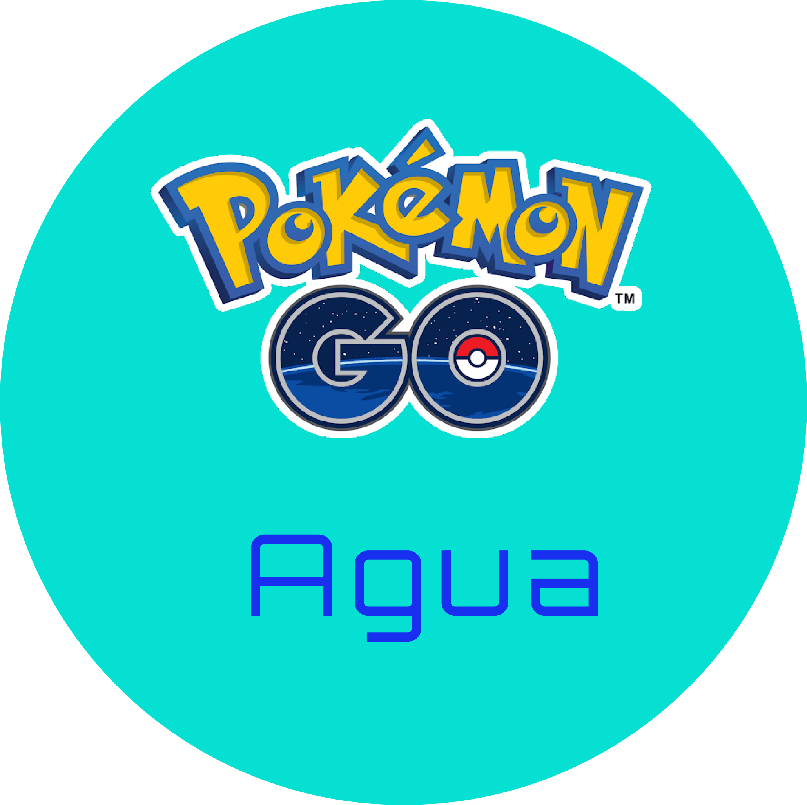
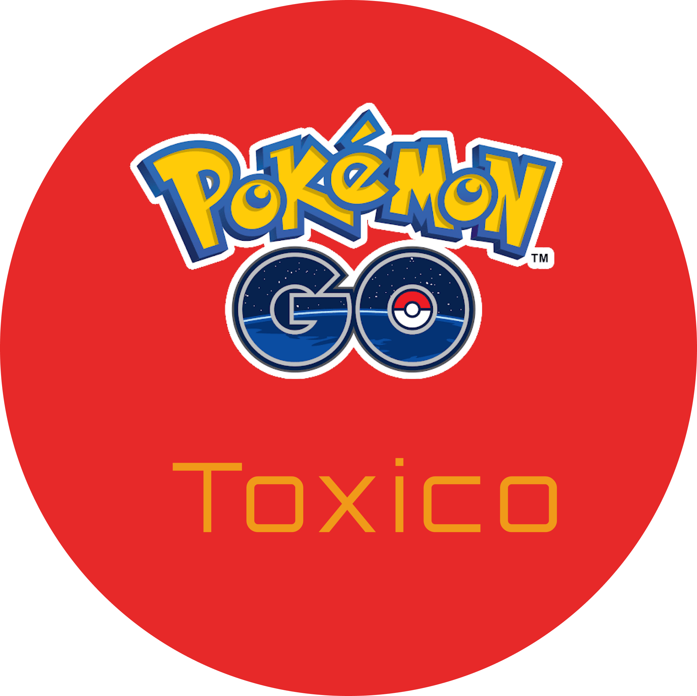
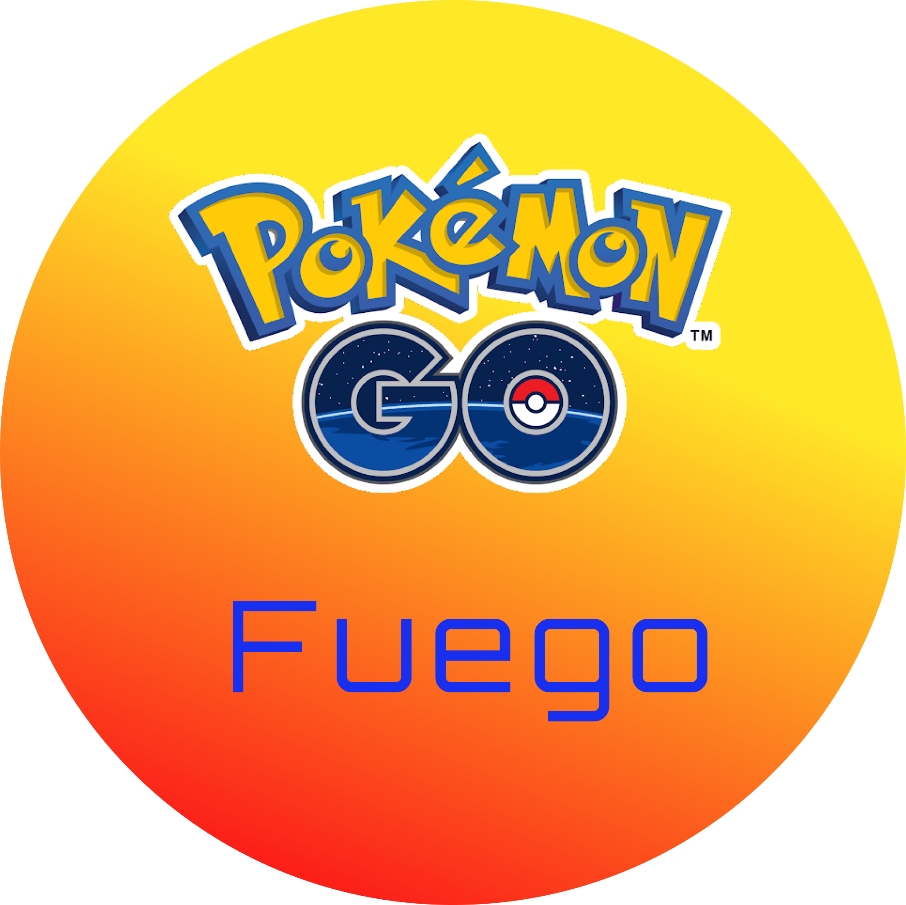

<router-outlet></router-outlet>
<!-- <header>
  <section class="categorie-btn">
    <button value="data" (click)='filterByType(data)'>Todos</button>
    <button value="water"(click)='filterByType(data)'>agua</button>
    <button value="ice" (click)='filterByType(data)'>Frio</button>  
  </section>
  <div class='container-header'>
    <ul *ngFor="let data of pokemon.pokemon" (click)='filterByType(data.type)'>
      <li>
        {{data.type}}
      </li>
    </ul>
  </div>
</header>
<section class="menu-section" > -->
  <section class="categorie-btn">
    <!-- <button value="data" (click)='filterByType(data)'>Todos</button> -->
    <button value="water"(click)='filterByTypeWater()'></button>
    <button value="grass" (click)='filterByTypeGrass()'></button>  
    <button value="poison" (click)='filterByTypePoison()'></button>
    <button value="fire" (click)='filterByTypeFire()'></button>
    <button value="filterByTypeNormal" (click)='filterByTypeNormal()'></button>
  </section>
  <section class="container-pokemon">
          <ul class ="pokemon-menu" *ngFor="let water of showPokemonWater">
              <li>{{water.name}}</li>
              <li>{{water.type}}</li>
              <li></li>
          </ul>
    <ul class ="pokemon-menu" *ngFor="let grass of showPokemonGrass" >
        <li>{{grass.name}}</li>
        <li>{{grass.type}}</li>
    </ul>
    <ul class ="pokemon-menu" *ngFor="let poison of showPokemonPoison" >
      <li>{{poison.name}}</li>
      <li>{{poison.type}}</li>
  </ul>
  <ul class ="pokemon-menu" *ngFor="let fire of showPokemonFire" >
    <li>{{fire.name}}</li>
    <li>{{fire.type}}</li>
</ul>
<ul class ="pokemon-menu" *ngFor="let flying of showPokemonNormal" >
  <li>{{flying.name}}</li>
  <li>{{flying.type}}</li>
</ul>
</section>
 <!-- Sección de slide -->
  <!-- <section class="container-slider">
  <section class="slider">
    <figure class="slide active" *ngFor="let water of showPokemonWater">
      
      <figcaption>Las mascotas oficiales de las Olimpiadas de Río 2016 son Vinicius y Tom, en homenaje a los ídolos de la música brasileña Vinicius de Moraes y Tom Jobim.</figcaption>
    </figure>
   <figure class="slide">
      
      <figcaption>La estadounidense Abbey D'Agostino ayuda a la atleta neozelandesa Nikki Hamblin luego de su caída demostrando la nobleza de su espíritu olímpico.</figcaption>
    </figure>
    <figure class="slide">
      
      <figcaption>Se conformó por primera vez un Equipo Olímpico de Atletas Refugiados que fue representado por 10 atletas.</figcaption>
    </figure>
    <figure class="slide">
      
       <figcaption>Una Iraní alzó la voz para protestar en los Juegos Olímpicos de Río 2016 clamando que se permita a las mujeres iraníes entrar en los estadios en su pais.</figcaption>
     </figure>
    <section class="buttons-slides">
      <section class="btn-slide active"> </section >
      <section class="btn-slide"> </section >
      <section class="btn-slide"> </section >
      <section class="btn-slide"> </section >
    </section>
  </section>
</section>   <!-- Cierre de Sección de Slide -->
<!-- </header> --> -->
